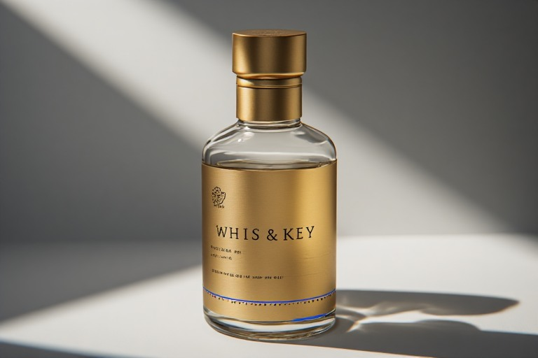

Concept 001 · Strategic Perspective · Sonic Identity
Velocity vs. Coherence
On time as the overlooked brand attribute. Most brands treat it as an inconvenience — something to conquer, compress, optimise. This is an argument that pace itself is a personality, proven through Whis & Key, a small-batch whiskey built entirely around its own tempo.
Open to the right collaborator
Visual Direction
Don't Rush: Time as Brand Personality
Palette
Primary — Gold/Brown #A8501D
Heritage. Warmth. The whiskey itself.
Accent — Royal Blue #2A52BE
Used sparingly. Signals: this moment is for the next generation.
Blue never replaces gold — it sits beside it, as an invitation rather than a rebrand.
Typography
Aa
A modern serif headline, set the way this brand speaks — unhurried, considered, still.
A modern serif — elegant without looking like old library shelving. It lets the brand say heritage without looking dated. (Fraunces — working placeholder for Canela / GT Sectra)
Imagery Style

Photography carries the human moments. The drip motif carries consistency — recurring across packaging, transitions, and loading states.
Sonic Identity
The drip itself is the brand's sound — slow at 9am, quickening to a full pour by 6pm, easing back to stillness by 9pm. No spirits brand currently owns sound this way.
Voice
Silent through most content.
When it is time for a reset, you can count on us.
Reserved only for the end of long-form campaign films — after the silence. Never used as a tagline elsewhere. Its rarity is the point.
The Motif — Full Cycle
This cycle appears everywhere — packaging, content, digital touchpoints. Total consistency: this brand doesn't rush, ever.
Content Pillars
The Drip
The daily ritual itself.
The Wait
Anticipation, scarcity, countdown culture for new batches.
The Pour
The 6pm payoff moment.
The Bridge
Content connecting older and younger drinkers across the same ritual.
Sample Execution

Applied to packaging — the concept translated into a single deliverable.
The Case for Cadence
Every brand has a tempo, whether it knows it or not. Almost none has chosen it on purpose.
Fast fashion behaves fast. Heritage watchmaking behaves slow. But these are usually accidents of category, not decisions — nobody sat down and asked what a brand's relationship with time should say about it. Once tempo is treated as a designable attribute rather than a byproduct of industry norms, a brand gains a register almost none of its competitors are using on purpose.
Volume has quietly replaced identity as the metric that matters.
In a market where every rival in a category claims the same three adjectives — authentic, crafted, bold — pace is one of the few remaining places to be genuinely distinct, precisely because so few brands are consciously playing there at all.
The Brand, in Brief
Whis & Key sits in a category built on inherited language — “heritage,” “craftsmanship,” “since 18-something” — vocabulary that has calcified into wallpaper.
Audiences no longer feel it; they simply recognise it as category noise. Meanwhile the brand's own marketing behaves like every fast, disposable brand around it — rapid content, trend-chasing, promotional urgency — directly contradicting the one thing the product actually has going for it: it took time.
Its audience splits in a way that matters strategically. The older drinker already lives unhurried — he doesn't need convincing that patience has value, he needs the brand to earn his trust through restraint, not tell him about it. The younger drinker has rarely experienced “slow” as anything but “irrelevant” — every brand competing for his attention moves fast, so slowness currently reads as absence, not confidence.
Whis & Key doesn't need to teach patience. It needs to make patience feel like a flex.
Time You Can Taste
The brand's entire tempo — not just its messaging — is built around a single mechanic: the drip.
At six in the morning, the whiskey falls in a single, unhurried drop. Long pause. Another. As the day builds momentum, the drip quickens hour by hour, until by six in the evening it arrives as a full, generous pour — met with the low exhale of someone who has finally reached their moment. Then, as all things must, it slows again into the night.
This isn't decoration. It's a working demonstration that time can be composed the way a brand composes tone or colour.
Scrub the day, or press play — the drip quickens toward evening, then slows into the night. This is the mechanic Whis & Key would own as a continuous audio-visual piece — ambient content, an in-store installation, a standalone soundscape.
Dialing Into the Execution
This is where cadence stops being a metaphor and becomes an operating system for the brand.
- Content rhythm. Whis & Key posts rarely, and only when there's something worth the interruption — not on a content calendar borrowed from faster categories. Fewer moments, each one heavier.
- The daily ritual as content itself. The drip-clock becomes a literal, ownable asset — released as ambient content, an in-store installation, even a standalone soundscape experience. Nobody else in the category owns time as a sensory signature.
- Release cadence. New batches are announced with real lead time — a countdown culture that makes anticipation part of the product, not a marketing inconvenience to be minimised.
- Response time as brand behaviour. Customer service and social replies move at a considered pace — not instant, not evasive, simply measured. Consistency is felt through behaviour, not just claimed in copy.
- The cross-generational bridge. A campaign showing an older drinker and a younger one waiting together — for a batch, a toast, a moment — proves the tempo works across the audience split without lecturing either side.
Beyond Whiskey
Most brands have a tempo by accident. Very few have one by design.
The specifics change by category, but the strategic move is portable: naming velocity versus coherence as a real tension — and then choosing, deliberately, where a brand sits on it — is available to almost any category currently competing on sameness. Whis & Key is simply the clearest lens I've built to prove the thinking out. The whiskey happens to make it literal. The principle doesn't need whiskey to be true.
Don't rush. Some things simply take the time they take — and the brands willing to admit that, on purpose, are the ones that will still sound like themselves in ten years.
This one is open to the right collaborator